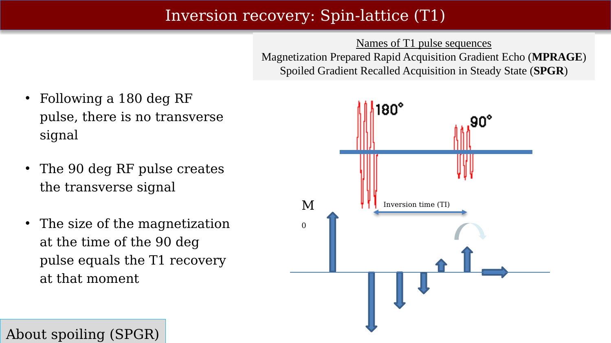
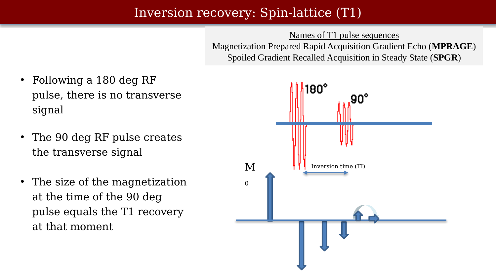
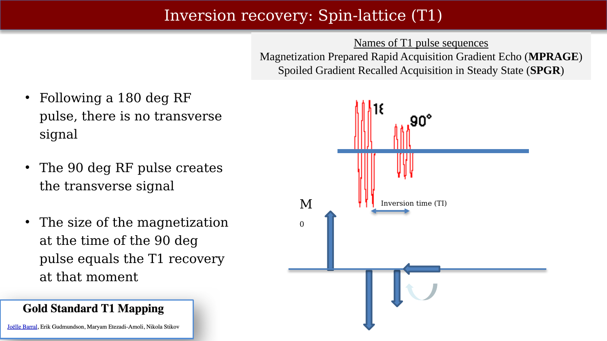
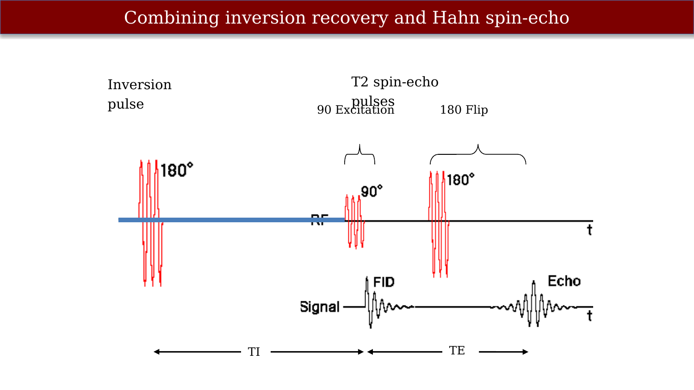
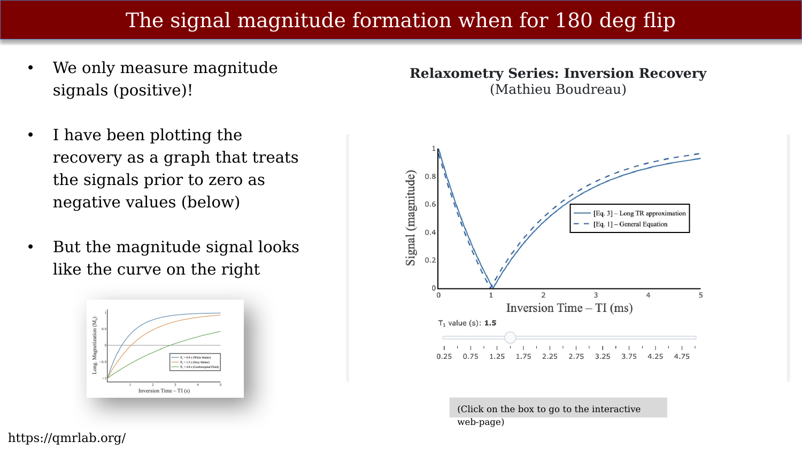
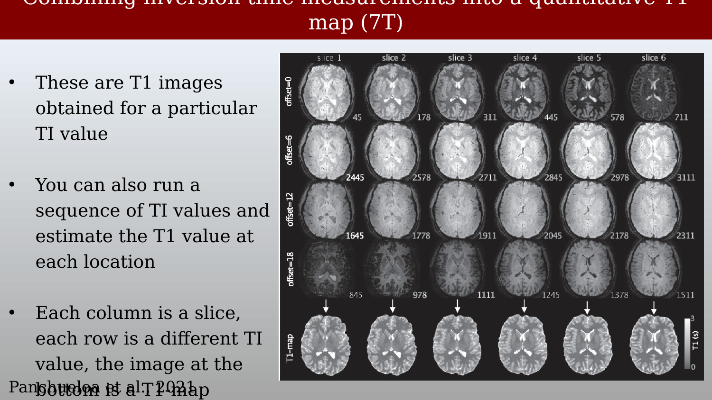
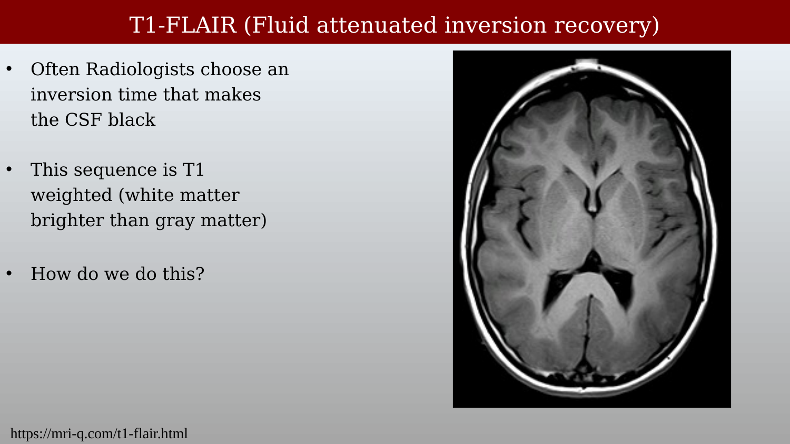
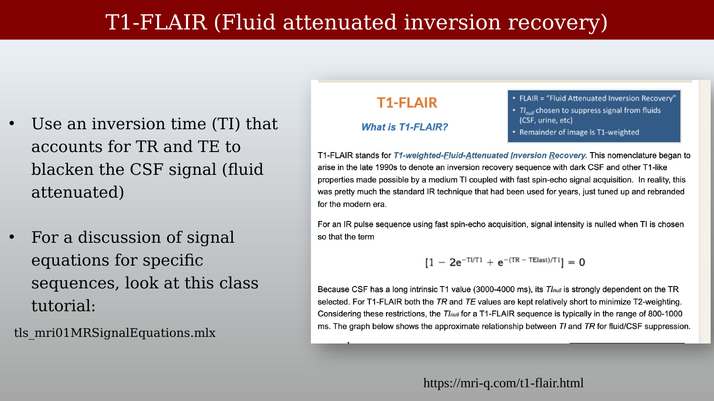
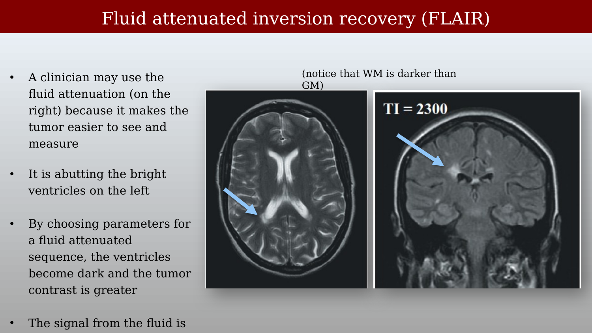
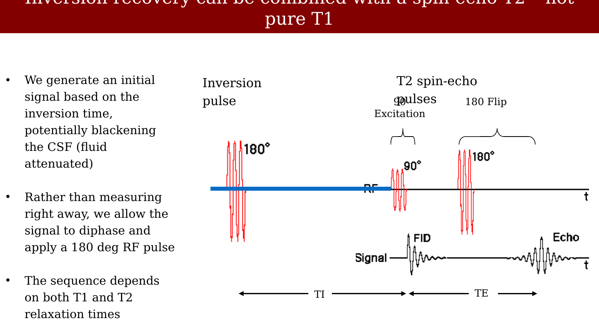

10 Inversion recovery
Suggestions of all kinds for these lecture notes are welcome — whether it’s fixing small errors, raising bigger questions, or offering new perspectives. Please share comments through GitHub Issues. To make feedback easier to address, please point to the section you have in mind — by section number or a short snippet of text.
10.1 Measuring the T1 time constant:



In Figure 7.8 we asked what happens when the flip angle is 180 deg rather than 90 deg. This is the answer, and it is the whole basis of the inversion recovery sequence.
A 90 deg pulse leaves the longitudinal component at zero, so it recovers from zero,
\[ M_z(t) = M_0\left(1 - e^{-t/T_1}\right) \tag{10.1}\]
A 180 deg pulse inverts the net magnetization: it now points along \(-z\), and it starts at \(-M_0\) rather than at zero. The recovery has the same exponential form, but it has twice as far to travel,
\[ M_z(t) = M_0\left(1 - 2e^{-t/T_1}\right) \tag{10.2}\]
The factor of 2 is the only difference. It means that at \(t=0\) the signal is \(-M_0\).
The experiment built around this is the sequence {180 deg — TI — 90 deg — readout}: invert, wait a chosen inversion time TI, then read out. It was worked out for NMR in the late 1940s (Drain, 1949; Hahn, 1949), and the first \(T_1\) map of a specimen followed soon after imaging became possible, using a 90 deg preparation pulse in place of the 180 deg one (Pykett & Mansfield, 1978). Inversion recovery is still the measurement that other \(T_1\) methods are validated against (Stikov et al., 2015); we return to why in Section 10.7.
The slide lists MPRAGE and SPGR as “names of T1 pulse sequences”, and they get there by different routes. MPRAGE (magnetization-prepared rapid gradient echo) really is an inversion recovery sequence: a 180 deg pulse followed by a fast gradient-echo readout train that collects a segment of k-space during one recovery. SPGR (spoiled gradient recalled acquisition in steady state) has no inversion pulse at all — its \(T_1\) weighting comes from a short TR and the choice of flip angle. Spoiling means deliberately destroying whatever transverse magnetization survives a repetition, so that only the longitudinal component carries over to the next one; it is what makes the steady state depend on \(T_1\) in a simple way.
10.2 Combining inversion recovery and Hahn spin-echo

A 180 deg pulse produces no transverse magnetization, so it generates no signal by itself. That is why the sequence needs the second, 90 deg pulse: it tips whatever longitudinal magnetization has recovered during TI into the transverse plane, where we can measure it. The measured signal is therefore a snapshot of the T1 recovery at time TI.
Notice what stays fixed as the experiment is repeated. The excitation pulse, the echo time, and the readout are identical at every TI; only the inversion time changes, and each repetition contributes a single measurement. That is a large part of why the method is trusted. An error in the excitation flip angle, or imperfect spoiling, scales every point of the recovery curve by nearly the same factor — and a common scale factor does not change the time constant that the fit returns (Stikov et al., 2015).
10.3 The signal equation
Equation 10.2 assumes the magnetization was fully relaxed when the inversion pulse arrived. In a real experiment the sequence repeats every TR, and TR is finite, so at the next inversion \(M_z\) has not quite climbed back to \(M_0\). Solving the Bloch equations for the repeating sequence {\(\theta_{180}\) — TI — \(\theta_{90}\) — (TR \(-\) TI)} gives the steady-state longitudinal magnetization just before the excitation pulse,
\[ M_z(\mathrm{TI}) = M_0\, \frac{1-\cos\theta_{180}\,e^{-\mathrm{TR}/T_1}-\left[1-\cos\theta_{180}\right]e^{-\mathrm{TI}/T_1}} {1-\cos\theta_{180}\cos\theta_{90}\,e^{-\mathrm{TR}/T_1}} \tag{10.3}\]
The recorded signal is this quantity multiplied by \(k\sin\theta_{90}\,e^{-\mathrm{TE}/T_2}\), where \(k\) collects the receive gain, coil sensitivity, and proton density. Because TE and \(\theta_{90}\) are held constant across the TI series, all of those factors can be gathered into a single scale \(C\). Doing that, and taking the pulses to be ideal (\(\theta_{180}=180\) deg so \(\cos\theta_{180}=-1\); \(\theta_{90}=90\) deg so \(\cos\theta_{90}=0\)), collapses Equation 10.3 to
\[ M_z(\mathrm{TI}) = C\left(1 - 2e^{-\mathrm{TI}/T_1} + e^{-\mathrm{TR}/T_1}\right) \tag{10.4}\]
and if TR is long enough for essentially complete relaxation — the usual rule of thumb is \(\mathrm{TR} > 5\,T_1\) — the last term is negligible and we are back to Equation 10.2,
\[ M_z(\mathrm{TI}) = C\left(1 - 2e^{-\mathrm{TI}/T_1}\right) \tag{10.5}\]
Equation 10.5 is the form nearly everyone writes down, and it is the one the curves on this page are computed from. It is worth knowing when it fails. A protocol is designed with TR long compared with the \(T_1\) of the tissue of interest, but the same slice usually contains CSF, whose \(T_1\) is around 4 s at 3 T. A TR that is generous for white matter is short for CSF. Equation 10.4 is the safer choice for simulating an experiment, and the difference between the two shows up exactly where \(T_1\) approaches TR — Figure 10.5 plots one against the other as \(T_1\) is varied at fixed TR, which is the quickest way to see how large the discarded term gets. We will need Equation 10.4 again when we come to FLAIR, which nulls precisely that long-\(T_1\) tissue.
10.4 The signal magnitude over time

Because the magnetization has to climb all the way from \(-M_0\) to \(+M_0\), it passes through zero on the way. Setting Equation 10.5 to zero gives that time,
\[ \mathrm{TI}_{\text{null}} = T_1\ln 2 \approx 0.69\,T_1 \tag{10.6}\]
The presence of the zero-crossing makes the sequence particularly useful: choosing the inversion time TI so that a particular tissue is passing through zero suppresses that tissue entirely.
The graphs above plot \(M_z\) itself, with the values before the zero crossing shown as negative. The scanner records a complex signal, but inversion recovery protocols usually store magnitude images, and a magnitude is always positive. Taking the absolute value folds the negative part of the recovery upward, so the measured curve descends to zero at \(\mathrm{TI}_{\text{null}}\) and then climbs again — the V shape on the right. The position of that null is a direct read on \(T_1\), and tissues with different \(T_1\) values null at different inversion times. Figure 10.7 switches between the two views at a single inversion time, chosen so that white matter and grey matter sit equal and opposite: they are easy to tell apart in the magnetization and identical once the magnitude is taken.
Sweeping TI across the whole recovery, rather than fixing it, is what Figure 10.8 does.
Two consequences follow from the fold, and both come back later. The measured curve is no longer a single exponential, so it cannot be fitted as one without first restoring the sign of the early points (Section 10.6). And the null is not really a zero in the data: noise in a magnitude image is Rician, which keeps the measured value above zero even where the true signal vanishes, so the bottom of the V is the least reliable part of the curve.
10.5 The contrast changes for different TI (inversion times)
After the 180 deg pulse every tissue starts the same climb from \(-M_0\), but each recovers on its own \(T_1\), so the gaps between them open and close as the longitudinal recovery proceeds. The 90 deg pulse samples those gaps: whatever ordering the tissues happen to have at time TI is the contrast written into the image. TI is the contrast control for this sequence, in the way TE is for a spin echo.
The slider in Figure 10.8 walks through it, using Equation 10.5 with the three \(T_1\) values named in the caption. At TI = 200 ms all three tissues are still on the inverted part of the recovery, so the one that has recovered least is the most negative and therefore has the largest magnitude: the image runs bright to dark from cerebrospinal fluid (\(|M_z| = 0.90\)) through grey matter (0.72) to white matter (0.60). Over the next few hundred milliseconds white matter falls quickly while CSF barely moves, so that spread widens — by TI = 400 ms it runs 0.81 to 0.28. At TI = 624 ms white matter reaches its null, \(0.69\,T_1\) with \(T_1 = 0.90\) s, and drops out of the image altogether. By TI = 936 ms it is grey matter’s turn, and white matter — now recovering on the positive side of the curve — has become the brighter of the two. The two tissues have swapped places in the image without anything about the tissue having changed.
CSF, with the longest \(T_1\) of the three, nulls much later still: \(0.69 \times 4.0\ \mathrm{s} \approx 2.8\) s in this long-TR figure. Fat behaves the same way at the other end. Its \(T_1\) is a few hundred milliseconds, much shorter than white matter’s, so it nulls first — which is what a short-TI inversion recovery sequence exploits to suppress fat.
10.6 Combining inversion time measurements into a quantitative T1 map (7T)

A single inversion recovery image is \(T_1\)-weighted: bright and dark tell you that \(T_1\) differs from place to place, not what it is. Acquire the same slice at several inversion times and every voxel carries its own recovery curve, which can be fitted for \(T_1\). The result is a \(T_1\) map, an image whose values are in seconds rather than in arbitrary scanner units.
Figure 10.9 is that experiment at 7 T (Sanchez Panchuelo et al., 2021). Each column is a slice and each row a different inversion time, with the TI in milliseconds printed on each panel; the bottom row is the fitted map, its colour bar running 0 to 3 s. Read across a row and the contrast reverses much as the slider above does. Read down a column and you are looking at the data behind one map.
Fitting is where the choices are, and the folded magnitude curve is what makes them interesting.
Polarity has to be restored. With magnitude-only data the fit must either recover the sign of the pre-null points, turning the V back into an exponential, or model the absolute value directly. Restoring polarity is delicate near the null, where Rician noise keeps the measurement above zero. If phase data are kept, a phase term can be carried in the model instead (Barral et al., 2010).
The historical shortcuts. The “null method” read \(T_1\) straight off the TI at which a voxel went dark (Pykett et al., 1983), and a rearrangement of Equation 10.5 can be fitted as a straight line on a semi-log plot (Fukushima & Roeder, 1981). Both were designed around the computers of the day.
Non-linear least squares — Levenberg–Marquardt applied to Equation 10.4 or Equation 10.3 — is the modern default. Note that Equation 10.5 may only be used when \(\mathrm{TR} > 5\,T_1\) holds for every tissue in the slice, which in practice it rarely does.
A model that assumes nothing about TR. Barral et al. (2010) showed that complex data can be fitted to
\[ S(\mathrm{TI}) = a + b\,e^{-\mathrm{TI}/T_1} \tag{10.7}\]
with complex \(a\) and \(b\) — five real parameters in all, and no assumption about TR, only that everything except TI is held constant between measurements. Their reduced-dimension non-linear least squares algorithm turns the multi-parameter minimisation into a one-dimensional grid search over \(T_1\), which makes it as accurate as Levenberg–Marquardt on Equation 10.3 and up to about 75 times faster, with no need to initialise the search. Magnitude-only data use the same model with three real parameters. The code was released with the paper and ships as a qMRLab \(T_1\) model.
One protocol rule follows from all of this: avoid placing an inversion time at the null of the tissue you care about. Those points carry almost no signal, are dominated by Rician noise, and destabilise the fit under low-SNR conditions.
The \(T_1\) map behind the slider above was not fitted from an inversion recovery series at all — it comes from a variable-flip-angle acquisition, and its caption notes that the VFA fit reads high, increasingly so as \(T_1\) grows, so the values had to be recalibrated onto literature numbers before the nulls would land in the right place. That discrepancy is not an artefact of this page. Comparing inversion recovery, Look–Locker, and VFA in the same subjects, Stikov et al. (2015) found the three methods agreeing in phantoms and disagreeing in vivo by more than 30% in white matter, with VFA reading high and Look–Locker low against the inversion recovery reference. This is the reason a \(T_1\) value is quoted with its method attached.
10.7 Why inversion recovery is the reference, and why you rarely meet it
Three properties make it the technique others are validated against. A typical protocol uses a long TR and five or more inversion times spread across \([0, \mathrm{TR}]\), which conditions the fit well. The signal spans the full range from \(-CM_0\) to \(+CM_0\), twice the dynamic range of a saturation-recovery experiment, so there are inversion times with good SNR all along the recovery (Fukushima & Roeder, 1981). And, as noted above, the \(T_1\) estimates are largely insensitive to excitation flip-angle error and imperfect spoiling (Stikov et al., 2015). No auxiliary calibration scan is required, which is not true of the variable-flip-angle method — it needs a \(B_1\) map, and the errors in that map propagate into the \(T_1\) map.
The cost is time. TR must be a few \(T_1\), and up to \(5\,T_1\) if Equation 10.5 is the model being fitted (Steen et al., 1994). Only one inversion time is acquired per TR, and a conventional Cartesian readout collects one phase-encode line per excitation, so 100–200 excitations are needed per image. A single-slice \(T_1\) map takes on the order of 10–25 minutes, which puts whole-brain coverage out of reach for a clinical protocol. That is why inversion recovery survives as a reference measurement and as a way to get \(T_1\) values for optimising other sequences, rather than as something you would run on a patient.
Faster variants exist. The Look–Locker method (Look & Locker, 1970) replaces the single 90 deg readout with a train of small-flip-angle excitations after each inversion — {180 deg — \(\tau\) — \(\theta\) — \(\tau\) — \(\theta\) — …} — sampling the recovery curve many times per TR instead of once. It is far more time-efficient, at the cost of lower SNR per sample and, because the magnetization at each sample depends on all the excitations before it, greater sensitivity to \(B_1\) inhomogeneity and imperfect spoiling (Stikov et al., 2015). MOLLI and ShMOLLI are the cardiac variants, built to fit inside a breath-hold (Messroghli et al., 2004; Piechnik et al., 2010). Going the other way, replacing the inversion with a 90 deg saturation pulse removes the need for a long TR entirely, since every saturation pulse resets \(M_z\) to the same state — but it halves the dynamic range to \([0, CM_0]\), and the short inversion times, which are the quickest to acquire, are the ones with the least signal.
For a worked example with data, code, and results from many sites, see the ISMRM 2020 reproducibility challenge on inversion recovery \(T_1\) mapping (Boudreau et al., 2023).
10.8 T1-FLAIR (Fluid attenuated inversion recovery)


Radiologists use the null in the opposite direction from the \(T_1\) mapper. Instead of fitting the whole recovery curve, pick one inversion time at which a chosen tissue is passing through zero, and that tissue disappears. Set TI to null CSF and you have a fluid-attenuated inversion recovery image: ventricles and sulci go black, and what remains is weighted by whatever the readout emphasises. In Figure 10.10 the readout keeps TE short, so white matter stays brighter than grey — a \(T_1\)-weighted image with the fluid removed.
The nulling condition is the signal equation of Section 10.3 set to zero. Using Equation 10.4,
\[ 1 - 2e^{-\mathrm{TI}/T_1} + e^{-(\mathrm{TR}-\mathrm{TE}_{\text{last}})/T_1} = 0 \quad\Longrightarrow\quad \mathrm{TI}_{\text{null}} = T_1\ln\!\left(\frac{2}{1+e^{-(\mathrm{TR}-\mathrm{TE}_{\text{last}})/T_1}}\right) \tag{10.8}\]
where \(T_1\) is that of the tissue to be suppressed, and \(\mathrm{TE}_{\text{last}}\) is the last echo time of the fast spin-echo readout, as written on Figure 10.11.
Why not simply use \(0.69\,T_1\)? Because CSF is the case where Equation 10.5 fails. Its \(T_1\) is around 4 s, so Equation 10.6 would put the null at about 2.8 s — longer than the entire repetition time of many sequences. Equation 10.8 gives shorter answers, and gives the ones actually used. For a T2-FLAIR, whose TR is long — 8 to 10 s is typical — it puts the CSF null between about 2.3 and 2.5 s, bracketing the TI = 2300 ms labelled on Figure 10.13. For a T1-FLAIR, where TR and TE are both kept short to avoid \(T_2\) weighting, with \(\mathrm{TR} - \mathrm{TE}_{\text{last}}\) near 2 s the null comes down to roughly 0.85–0.95 s — the 800–1000 ms range quoted on the slide. The same equation and the same tissue give inversion times that differ by a factor of nearly three, because the term Equation 10.5 discards is the dominant correction whenever \(T_1\) is comparable to TR. Nulling the fluid is only half of a FLAIR protocol, though, and Figure 10.12 is the other half: it carries two periventricular lesions, and setting TI alone leaves them invisible until TE is stretched out as well.

Figure 10.13 shows why a clinician asks for it. On the left is a \(T_2\)-weighted image: the lesion is bright, but so is the CSF it abuts, and the boundary between the two is hard to place — which matters if the lesion is to be measured rather than merely spotted. On the right, the same broad kind of contrast with CSF nulled at TI = 2300 ms. The ventricles are black, the lesion stands out against them, and its edge can be drawn. Note that white matter is darker than grey in this image: the readout here is \(T_2\)-weighted, so this is a T2-FLAIR, not the T1-FLAIR of the previous figure. Periventricular lesions are the standard case for it — in multiple sclerosis as much as in tumour imaging — precisely because they sit against fluid.
10.9 Combining inversion recovery with spin-echo

The readout after the 90 deg pulse does not have to be immediate. Adding a 180 deg refocusing pulse and waiting until TE produces a Hahn spin echo, so the recorded amplitude picks up a factor \(e^{-\mathrm{TE}/T_2}\) on top of the inversion recovery term. The image is then weighted by \(T_1\) through TI and by \(T_2\) through TE, and reading it as a pure \(T_1\) image is a mistake.
The two FLAIR images on this page are the two ends of that trade-off. A T1-FLAIR keeps TE short, so \(e^{-\mathrm{TE}/T_2} \approx 1\) and TI dominates the contrast; a T2-FLAIR sets TI to null CSF and then makes TE long, so the surviving contrast among the remaining tissues is \(T_2\)-weighted. Same preparation, opposite readout.
This is also why the mixing does not spoil a \(T_1\) measurement. In a mapping experiment TE is held constant across the whole TI series, so \(e^{-\mathrm{TE}/T_2}\) is a fixed multiplier, absorbed into the constant \(C\) of Equation 10.4, and it never reaches the fitted \(T_1\). What would spoil the measurement is letting TE vary along with TI.